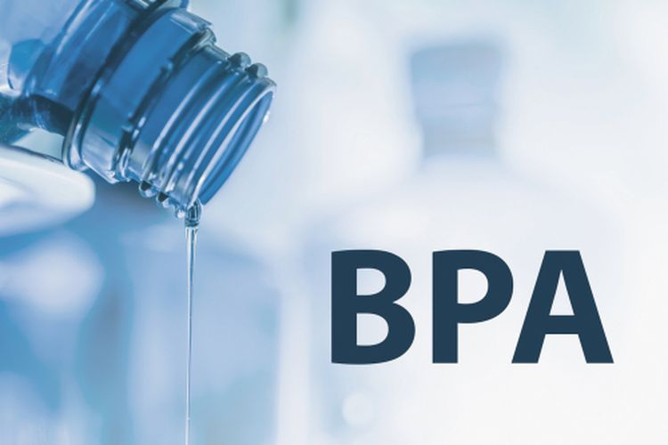

Apa itu BPA?

BPA adalah bahan kimia industri yang digunakan untuk membuat plastik polikarbonat dan resin epoksi.
Bahan kimia ini bukan barang baru dalam industri kemasan dan barang-barang rumah tangga,
tapi telah digunakan sejak 1950an silam. Plastik polikarbonat dan resin epoksi kerap digunakan untuk membuat
botol minum, botol bayi, kemasan air minum, tempat makan, kacamata, pelapis makanan kalengan, tutup botol,
pipa saluran air, sampai jendela anti-pecah.
Sejarah BPA
BPA disintesis pertama kali oleh seorang ahli kimia Rusia, Aleksandr Dianin, sebagai estrogen sintetis untuk industri farmasi.
Pada tahun 1934 seorang pekerja dari I.G. Farbenidustrie di Jerman mengajukan klaim untuk pembuatan produk reaksi
amina dengan epoksi, termasuk satu epoksi dengan bisfenol A dan epiklorohidrin. Namun, komersialisasi resin epoksi
baru diakui beberapa tahun kemudian oleh DeTrey Freres Co. di Swiss dan oleh DeVoe dan Raynolds Co. di Amerika Serikat.
Kemudian, ditahun 1936 Pierre Castan dari DeTrey Freres Co. menghasilkan resin epoksi leleh rendah dari bisfenol
A dan epiklorohidrin yang memberikan komposisi termoset dengan ftalat anhidrida. Akhir 1940-an dua perusahaan AS yaitu
Shell Chemical Co. dan Union Carbide Corp, memulai penelitian tentang resin epoksi berbasis bisfenol A.
Pada saat itu, Shell adalah satu-satunya pemasok epiklorohidrin, dan Bakelite adalah pemasok resin fenolik dan bisphenol A.
Fungsi Utama BPA

BPA memiliki fungsi yaitu sebagai bahan dasar untuk pembuatan barang berbahan plastik.
Barang tersebut bisa berupa botol plastik, pelapis kaleng, pipa saluran air, dan juga jendela anti pecah.
BPA sebenarnya memiliki fungsi yang bagus untuk bahan dasar kaca, pelapis kaleng dan pipa.
Karena meiliki ketahanan terhadap panas sampai 225-230°C. Oleh karena itu, BPA lebih efektif jika digunakan
untuk barang-barang yang fungsi nya tidak dugunakan untuk makanan. Karena memiliki ketahanan panas yang cukup tinggi.
Bahaya BPA Jika Terkonsumsi
Paparan BPA dalam konsentrasi tinggi bisa berbahaya pada kesehatan. Pasalnya, zat kimia ini bisa meniru
struktur dan kinerja hormon estrogen dan tiroid. Dengan kata lain, zat ini dapat mengikat reseptor
estrogen dan tiroid, memengaruhi proses pertumbuhan, perbaikan sel, perkembangan janin, metabolisme tubuh,
sampai reproduksi. Untuk diketahui, tubuh kita sangat sensitif dengan perubahan hormon. Jadi,
ketika terpapar BPA dalam ambang batas yang tidak aman, kinerja tubuh bisa terganggu.
Berikut beberapa potensi bahaya BPA untuk kesehatan:
- Memengaruhi kesuburan pria dan perempuan
- Meningkatkan risiko obesitas, diabetes tipe 2, dan penyakit jantung
- Meningkatkan risiko kelainan bawaan dan gangguan perkembangan otak pada janin dan anak
- Meningkatkan risiko kanker ovarium, payudara, prostat, dan usus besar
Mengingat ada banyak potensi bahaya BPA untuk kesehatan, pastikan Anda meminimalkan paparan zat kimia ini,
terutama dari barang-barang yang berhubungan dengan makanan dan minuman.
Caranya dengan menggunakan produk yang berlabel “BPA free”, hindari atau minimalkan mengonsumsi makanan kalengan,
batasi mengonsumsi makanan dan minuman yang dikenal dengan wadah plastik berkode nomor 3 atau 7.
Agar lebih aman dari paparan BPA, gunakan wadah makanan dan minuman berbahan kaca, keramik, atau stainless steel,
terutama untuk makanan dan minuman panas. Jangan memanaskan wadah plastik, seperti menyimpan di
bawah paparan sinar matahari atau menggunakan wadah plastik untuk mengukus atau menghangatkan makanan.
Kembali ke Atas